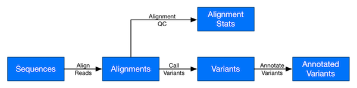

Large scale genomics workflows on AWS
Welcome! This tutorial walks through how to set up Amazon Web Services (AWS) products, such as Amazon S3, AWS Batch, etc., for running large scale genomics analyses. A typical genomics workflow is represented by the diagram below:

Specifically, we want to create a system that handles packaging applications, executing individual tasks, and orchastrating the data between tasks.
Prerequisites
We make a few assumptions on your experience:
- You are familiar with the Linux command line
- You can use SSH to log into a Linux server
- You have a working AWS account
- That account is able to create a AWS Batch environment.
If you are completely new to AWS, we highly recommend going through the following two AWS 10-Minute Tutorials.
- Launch a Linux Virtual Machine - A tutorial which walks users through the process of starting a host on AWS, and configuring your own computer to connect over SSH.
- Batch upload files to the cloud - A tutorial on using the AWS Command Line Interface (CLI) to access Amazon S3.
The above tutorials will demonstrate the basics of AWS, as well as set up your development machine for working with AWS.
Tip
We strongly recommend following the IAM Security Best Practicesfor securing your root AWS account and IAM users.
Setting up an AWS environment for genomics
There are several services at AWS that can be used for genomics. In this tutorial, we focus on AWS Batch. AWS Batch itself is built on top of other AWS services, such as Amazon EC2 and Amazon ECS, and as such has a few requirements for escalated privileges to get started from scratch.
For example, you will need to be able to create some IAM Roles. AWS Identity and Access Management (IAM) is a web service that helps you securely control access to AWS resources. You use IAM to control who is authenticated (signed in) and authorized (has permissions) to use resources.
We have provided some CloudFormation templates to make the initial environment setup less painful. We show how to use these in step 2.
Note
If you are using a institutional account, it is likely that it does not have administrative privileges, such as the IAM AdministratorAccess managed policy.
If this is the case, you will need to work with your account administrator to set up a AWS Batch environment for you. That means less work for you! Just point them at this guide, and hae them provide you with a AWS Batch Job Queue ARN, and a Amazon S3 Bucket that you can write results to. Move on to Step 3.
Assuming that you have the proper permissions, you are ready for Setting up AWS Batch.